Vereinsmeisterschaften
17. September 2022 Erntedank - Ropte - Cup
Endstand
1 Kanzow, Alexander 18 2007 KSV Rochade Göttingen 9 7 2 0 8.0 54.0 47.75
2 Hartogh, Christian 2109 KSV Rochade Göttingen 9 7 0 2 7.0 54.0 39.00
3 Kozachenko, Maria 16 ESV Rot-Weiß Göttingen 9 7 0 2 7.0 53.0 38.00
4 Mündörfer, Sebastian 12 1696 Hamelner SV 9 7 0 2 7.0 51.0 37.50
5 Mimkes, Pavel 18 1858 KSV Rochade Göttingen 9 6 1 2 6.5 52.5 34.50
6 Mimkes, Antal 16 1896 KSV Rochade Göttingen 9 6 0 3 6.0 51.0 29.00
7 Preuß, Oliver 1772 Schachsport Plesse Bovenden 9 4 4 1 6.0 50.0 31.25
8 Tulchynsky, David 16 1649 KSV Rochade Göttingen 9 6 0 3 6.0 47.0 25.50
9 Wachsmuth, Stefan 1879 SC Tempo Göttingen 9 5 2 2 6.0 42.0 26.25
10 Liestmann, Marius 16 1264 KSV Rochade Göttingen 9 5 1 3 5.5 49.0 27.00
11 Nizamova, Rita 1799 KSV Rochade Göttingen 9 5 1 3 5.5 47.0 25.50
12 Rüggeberg, Jan 1857 SC Tempo Göttingen 9 5 1 3 5.5 44.0 23.75
13 Mücke, Leonard 18 1681 SC Bad Salzdetfurth 9 5 1 3 5.5 41.0 21.75
14 Zimmermann, B. 18 1275 KSV Rochade Göttingen 9 5 1 3 5.5 37.5 20.25
15 Wachsmuth, Nils 16 1775 SC Tempo Göttingen 9 5 0 4 5.0 45.0 22.50
16 Grabitz, Georg 1842 Schachsport Plesse Bovenden 9 3 4 2 5.0 44.5 21.00
17 Drygala, Lars 16 1845 SK Goslar 9 5 0 4 5.0 44.5 20.00
18 Gronemeyer, Moritz 16 1465 KSV Rochade Göttingen 9 4 2 3 5.0 43.5 23.50
19 Bernhard Hellrug 9 5 0 4 5.0 43.0 17.50
20 Tulchynsky, Mark 14 1469 KSV Rochade Göttingen 9 5 0 4 5.0 42.0 18.00
21 Seelemann, T. 1552 Schachsport Plesse Bovenden 9 4 2 3 5.0 40.5 18.25
22 Laimina, Malik 14 1002 SK Duderstadt 9 5 0 4 5.0 39.0 19.00
23 Rumiantsev, Erik 12 Schachsport Plesse Bovenden 9 5 0 4 5.0 38.5 17.50
24 Lesser, Luan 16 1383 KSV Rochade Göttingen 9 4 1 4 4.5 44.5 21.25
25 Kanbach, Moritz 1666 Schachsport Plesse Bovenden 9 3 3 3 4.5 42.5 20.50
26 Meuser, Finn 10 SK Goslar 9 4 1 4 4.5 40.0 16.25
27 Meuser, Joshua 14 1205 SK Goslar 9 4 1 4 4.5 38.5 14.75
28 Schinke, Florian 793 KSV Rochade Göttingen 9 4 1 4 4.5 37.5 14.75
29 Hoffmann, Thomas 1701 Schachsport Plesse Bovenden 9 4 1 4 4.5 36.5 14.25
30 Ehbrecht, Adrian 14 1261 SK Goslar 9 3 2 4 4.0 40.5 14.50
31 Mörke, Niklas 1702 SC Bad Salzdetfurth 9 4 0 5 4.0 39.5 13.50
32 Kießling, Jakob 14 KSV Rochade Göttingen 9 4 0 5 4.0 39.5 13.00
33 Drygala, Torsten 1279 SK Goslar 9 4 0 5 4.0 33.5 11.00
34 Enk, Tilman 10 758 Schachsport Plesse Bovenden 9 4 0 5 4.0 30.5 11.5
35 Asmus Leon, Rafael 14 1254 KSV Rochade Göttingen 9 3 1 5 3.5 47.0 16.75
36 Beier, Johannes 14 792 KSV Rochade Göttingen 9 3 1 5 3.5 41.0 14.25
37 Kalusa, Lukas 14 1108 KSV Rochade Göttingen 9 3 1 5 3.5 37.5 12.25
38 Radenbach, Felix 12 954 KSV Rochade Göttingen 9 3 1 5 3.5 35.5 10.50
39 Anlauf, Jonas 12 702 Schachsport Plesse Bovenden 9 3 1 5 3.5 32.5 8.75
40 Radenbach, Sebastian 14 776 KSV Rochade Göttingen 9 3 1 5 3.5 32.0 9.5
41 Immke, Matteo 14 806 Schachsport Plesse Bovenden 9 3 1 5 3.5 32.0 8.75
42 Stoffers, Emil 12 883 Schachsport Plesse Bovenden 9 3 1 5 3.5 30.0 9.50
43 Frisch, Jakob 12 943 KSV Rochade Göttingen 9 3 0 6 3.0 37.5 10.00
44 Ilya Vasilevsky 10 KSV Rochade Göttingen 9 3 0 6 3.0 34.0 8.00
45 Radenbach, Anna 10 KSV Rochade Göttingen 9 3 0 6 3.0 28.5 5.5
46 Clausen, Bjarne 10 Schachsport Plesse Bovenden 9 2 1 6 2.5 30.5 4.5
47 Fricke, Tom 10 KSV Rochade Göttingen 9 1 3 5 2.5 29.5 6.5
48 Goldstein, Darian 10 KSV Rochade Göttingen 9 1 2 6 2.0 31.0 3,75
49 Anlauf, Nora 10 701 Schachsport Plesse Bovenden 9 1 2 6 2.0 28.5 4.75
U18-Wertung:
1.Alexander Kanzow 8 P.
2.Pavel Mimkes 6,5 P.
3.Leonard Mücke 5,5 P.
U16-Wertung:
1.Mariia Kozachenko 7 P.
2.Antal Mimkes 6 P.
3.David Tulchynsky 6 P.
U14-Wertung:
1.Mark Tulchynsky 5 P.
2.Malik Laimina 5 P.
3.Joshua Meuser 4,5 P.
U12-Wertung:
1.Sebastian Mündorfer 7 P.
2.Erik Rumiantsev 5 P.
3.Felix Radenbach 3,5 P.
U10-Wertung:
1.Finn Meuser 4,5 P.
2.Tillmann Enk 4 P.
3.Ilya Vasilevsky 3 P.
Ropte/Erntedank-Cup 2019
![]()
![]()
Plesse Bovenden + KSV Rochade Göttingen
Endstand:
1.Alexander Kanzow KSV Rochade 7 P. 59,5 BH Cup-Sieger, u16 = 1.Platz
2.Antonia Ziegenfuß ESV Göttingen 7 57,5 u14 = 1.Platz
3.Tom Behringer SK Plesse Bovenden 6,5 60,5 Königskettensieger
4.Dr.Thomas Wiegelmann Tempo Göttingen 6,5 60
5.Andreas Thiele 6,5 60
6.Rita Nizamova KSV Rochade 6,5 54,5 u16 = 2.Platz
7.Holger Ziegenfuß ESV Göttingen 6,5 54,5
8.Andreas G. Poschadel Hamelner SV 6 54,5 u12 = 1.Platz
9.Stefan Wachsmuth Tempo Göttingen 6 53
10.Csaba Daday ESV Göttingen 6 52
11.Reimund Keller SK Plesse Bovenden 6 50
12.Arthur Semmelmaier KSV Rochade 5,5 53,5
13.Frank Deckert SG Holzminden 5,5 53
14.Oliver Preuß SG Plesse Bovenden 5,5 49,5
15.Bernd Wienke 5,5 49,5
16.Pavel Mimkes KSV Rochade 5 52 u16 = 3.Platz
17.Luan Lesser KSV Rochade 5 51 u14 = 2.Platz
18.Larissa Ziegenfuß ESV Göttingen 5 50,5
19.Arne Schütz KSV Rochade 5 48,5
20.Rumo Schilling KSV Rochade 5 47 u14 = 3.Platz
21.Michael Grohn Tempo Göttingen 5 44,5
22.Thomas Seelemann SK Plesse Bovenden 5 54
23.Tobias Schuster KSV Rochade 4,5 53 u18 = 1.Platz
24.Simon Zimmermann KSV Rochade 4,5 48 u12 = 2.Platz
25.Lukas Kalusa KSV Rochade 4,5 46,5 u10 = 1.Platz
26.Marius Liestmann KSV Rochade 4,5 44 u12 = 3.Platz
27.Lennard Hillmann KSV rochade 4,5 43,5
28.Dagmar Heinemann SK Plesse Bovenden 4,5 42
29.Tim Fenge SV Geismar 4,5 38,5
30.Philip Herzig KSV Rochade 4 48 u18 = 2.Platz
31.Mark Tulchynsky KSV Rochade 4 47 u10 = 2.Platz
32.Nikolay Lavrov JKG Garbsen 4 45,5
33.Rafael Asmus Leon KSV Rochade 4 45 u10 = 3.Platz
34.Julian Lenz 4 40,5
35.Tim Casimir Kanbach SK Plesse Bovenden4 40,5
36.Kasimir Lenz KSV Rochade 4 37,5
37.Emil Stoffers SK Plesse Bovenden 4 37
38.Sebastian Radenbach KSV Rochade 3,5 37
39.Lea Anlauf SK Plesse Bovenden 3,5 37
40.Arthur Liebetanz KSV Rochade 3 42
41.Felix Radenbach KSV Rochade 3 41,5
42.Haven Luke KSV Rochade 3 38
43.Aran Gajendran KSV Rochade 3 37,5
44.Noah Koopmann 3 31,5
45.Matteo Imke SG Plesse Bovenden 3 29,5
46.Pavel Nebel SV Geismar 3 29
47.Anna Sophia Radenbach KSV Rochade 2,5 36
48.Tilman Enk SK Plesse Bovenden 2 28,5
49.Jonas Anlauf SK Plesse Bovenden 1,5 33,5
50.Nora Anlauf SK plesse Bovenden 0 31
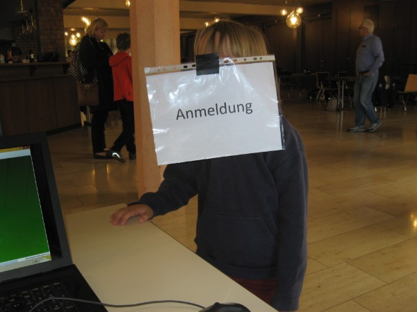
Es geht los ! (Anna hilft mit)
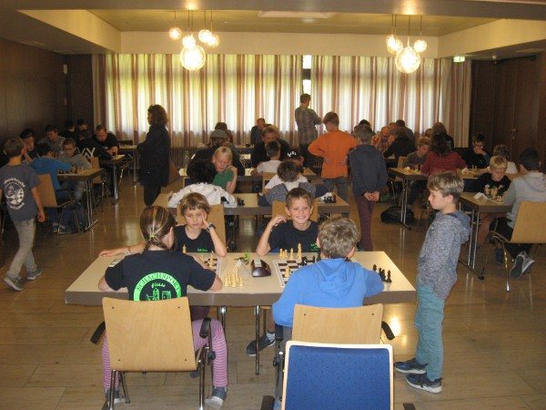
Blick in die Kampfarena
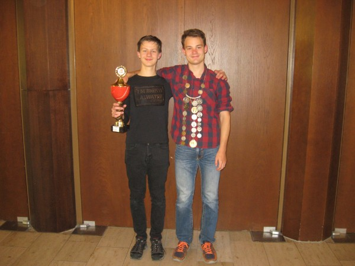
Gesamtsieger Alexander Kanzow und Königskettensieger Tom Behringer
Genau 50 Teilnehmer konnten wir in diesem Jahr beim Ropte-Cup/ Erntedankturnier begrüßen, leider waren auch in diesem Jahr keine Lehrterer dabei. Der Turniersaal bot auch in diesem Jahr ein sehr schönes Ambiente und wie man es vom KSV Rochade gewöhnt ist, bestand über die Hälfte der Teilnehmer aus Jugendlichen.
Im Gegensatz zu den letzten beiden Jahren, wo der Sieger schon ziemlich früh feststand, war es diesmal bis zum Schluss sehr spannend, denn der Führende Alexander Kanzow traf in der letzten Runde auf seine ärgste Verfolgerin Antonia Ziegenfuß, die aber vorher zu viele Remisen abgab und so Alex trotz des Abschlusssieges nicht mehr einholen konnte. Positiv aufgefallen sind zudem Rita Nizamova als zweitbestes Mädchen auf Platz 6, Andreas Gregor Poschadel, der als u12-Spieler in diesem Feld auf Platz 8 einlief, und Lukas Kalusa (u10-Spieler) der mit Platz 25 viele ältere Spieler hinter sich lassen konnte.
Ropte/Erntedank-Cup 2018
Weil 2018 sowohl der SK Plesse Bovenden sein 50tes Vereinsjubiläum, und der KSV Rochade Göttingen sein 10jähriges Vereinsjubiläum feiern konnten, haben wir uns gedacht beide Turniere zusammenzulegen, auch um eine größere Außenwirkung zu erzielen. Dennoch erschienen zum Turnier leider nur 49 Teilnehmer darunter aber 32 Jugendliche, die nicht nur vom KSV Rochade Göttingen, sondern auch vom SV Geismar, dem SK Plesse Bovenden und vom SC Northeim waren.
Ungeschlagen mit 8,5 P. souverän durchgesetzt hat sich schließlich der NSV-Präsident und unser Bezirksvorsitzende Michael S.Langer, der das Turnier ungeschlagen und verdient gewann. 2. wurde der DWZ-Favorit Alexander Schmidt aus Bad Emstal, der mit 8 P. ebenfalls ein starkes Turnier spielte. Julius Rosin, der während des Wettkampfes etwas ins Mittelfeld zurückzufallen drohte, holte aber mit 2 Siegen in den Abschlussrunden enorm auf und landete mit 7 P. auf dem 3.Rang, was ihm nicht nur zu einem Geldpreis, sondern zum vierten Male, zum Gewinn des Ropte-Cups verhalf.
Der Rest des Feldes hing schon 1 P. hinterher, Geheimfavorit Alexander Kanzow leistete sich zu viele Remisen, um noch weiter als auf Platz 5 zu landen. Ein ganz starkes Turnier haben auch der u12-Sieger Antal Mimkes (bis zuletzt kämpfte er um den Gewinn des Ropte-Cups mit, erst eine Niederlage in der letzten Runde gegen Michael S. Langer stoppte ihn), Platz 11, Gebr. Schütz auf den starken Plätzen 15 und 19, Carlo dos Santos Schwaab 5 P. Platz 20, und vor allem Moritz Blomer u10 (5 P.) auf Platz 21, gespielt.
| Rang | Name | Verein | Jg. | Punkte | Buchholz |
| 1. | Michael S. Langer | BS-Gliesmarode | 8,5 aus 9 | 53 | |
| 2. | Alexander Schmidt | Bad Emstal | 8 | 49 | |
| 3. | Julius Rosin | KSV Rochade GÖ | 7 | 52 | |
| 4. | Nikolai Petiko | SV Breitenworbis | 6 | 58 | |
| 5. | Alexander Kanzow | KSV Rochade GÖ | u16 | 6 | 50,5 |
| 6. | Ulrich Schütte | SK Plesse Bovenden | 6 | 50,5 | |
| 7. | Georg Grabitz | SK Plesse Bovenden | 6 | 50 | |
| 8. | Oliver Preuß | SK Plesse Bovenden | 6 | 48 | |
| 9. | Thomas Wiegelmann | Tempo GÖ | 6 | 47 | |
| 10. | Hans Hansen | Northeim | 6 | 47 | |
| 11. | Antal Mimkes | KSV Rochade GÖ | u14 | 6 | 46 |
| 12. | Luca Uhlendorff | KSV Rochade GÖ | u18 | 5,5 | 47,5 |
| 13. | Arne Schütz | KSV Rochade GÖ | 5,5 | 47 | |
| 14. | Rita Nizamova | KSV Rochade GÖ | u16 | 5,5 | 43 |
| 15. | Pavel Mimkes | KSV Rochade GÖ | u16 | 5,5 | 42 |
| 16. | Mario Seifart | SK Plesse Bovenden | 5,5 | 42 | |
| 17. | Daniel Cotenescu | SK Plesse Bovenden | 5 | 50,5 | |
| 18. | Thomas Seelemann | SK Plesse Bovenden | 5 | 49 | |
| 19. | Philipp Schütz | KSV Rochade GÖ | u18 | 5 | 45 |
| 20. | Carlo dos Santos Schwaab | KSV Rochade GÖ | u14 | 5 | 38,5 |
| 21. | Moritz Blomer | KSV Rochade GÖ | u10 | 5 | 37,5 |
| 22. | Matti Gargulla | KSV Rochade GÖ | u14 | 5 | 36 |
| 23. | Jonas Rau | ESV GÖ | 4,5 | 42,5 | |
| 24. | Volker Liestmann | KSV Rochade GÖ | 4,5 | 42 | |
| 25. | Rumo Schilling | KSV Rochade GÖ | u14 | 4,5 | 42 |
| 26. | Achim Schlather | ESV GÖ | u16 | 4,5 | 39,5 |
| 27. | Moritz Gronemeyer | Northeim | u12 | 4,5 | 36,5 |
| 28. | Marius Liestmann | KSV Rochade GÖ | u12 | 4,5 | 33,5 |
| 29. | Gerd Güdter | SK Plesse Bovenden | 4 | 45 | |
| 30. | Bennet Zimmermann | KSV Rochade GÖ | u14 | 4 | 40 |
| 31. | Simon Zimmermann | KSV Rochade GÖ | u12 | 4 | 39,5 |
| 32. | Lukas Kalusa | KSV Rochade GÖ | u10 | 4 | 38,5 |
| 33. | Amelie von Hugo | KSV Rochade GÖ | u14 | 4 | 38 |
| 34. | Marian Juric | KSV Rochade GÖ | u14 | 4 | 35,5 |
| 35. | Jonathan Heutelbeck | KSV Rochade GÖ | 4 | 33,5 | |
| 36. | Jonas Weber | Northeim | u12 | 4 | 27,5 |
| 37. | Norbert Terpe | KSV Rochade GÖ | u18 | 4 | 26,5 |
| 38. | Milan Nizamov | KSV Rochade GÖ | u12 | 3,5 | 38,5 |
| 39. | Pavel Nebel | SV Geismar | u12 | 3,5 | 36 |
| 40. | Fabio Theiß | SV Geismar | u12 | 3 | 39 |
| 41. | Moritz Brieskorn | SV Geismar | u12 | 3 | 38 |
| 42. | Eric Schwan | Northeim | u14 | 3 | 36,5 |
| 43. | Niklas Gleitze | Northeim | u10 | 3 | 34 |
| 44. | Raban Geißelreiter | Northeim | u10 | 3 | 32,5 |
| 45. | Jacob Klenke | KSV Rochade GÖ | u10 | 3 | 27,5 |
| 46. | Luca Boztug | KSV Rochade GÖ | u10 | 2 | 30 |
| 47. | Lea Sophie Anlauf | u10 | 2 | 29,5 | |
| 48. | Ze Liu | KSV Rochade GÖ | u10 | 2 | 27,5 |
| 49. | Ilyed Medhioub | u10 | 2 | 27 |
Michael S. Langer (links) gewinnt das Ernte-Dank-Ropte-Cup-Turnier in Bovenden
Ropte-Cup-Sieger 2018 und 3. der Gesamtwertung: Julius Rosin (KSV Rochade Göttingen)
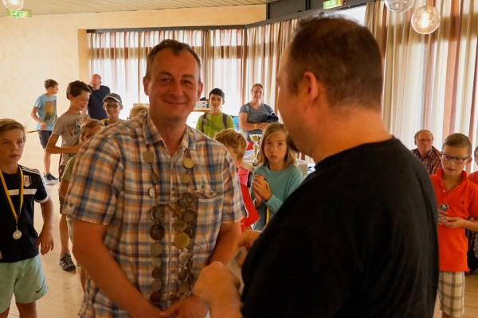
Ulrich Schütte Platz 6, wird als bester Bovender Spieler mit der Halskette geehrt.
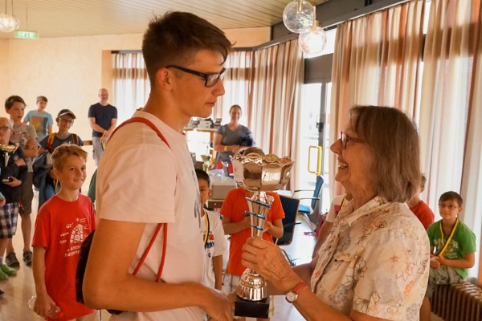
Bester u18-Spieler des Turniers: Luca Uhlendorff (KSV Rochade Göttingen)
Bester u16-Spieler des Turniers: Alexander Kanzow (KSV Rochade Göttingen)
Bester u14-Spieler des Turniers: Antal Mimkes (KSV Rochade Göttingen)
Bester u12-Spieler des Turniers: Moritz Gronemeyer (SC Northeim)
Bester u10-Spieler des Turniers: Moritz Blomer (KSV Rochade Göttingen)
Ropte-Cup 2017
Unser passives Mitglied Fabian Stotyn verpasste allen eine Lehrstunde und ließ einen Klassenunterschied zwischen sich und dem Rest des Feldes erkennen. Ohne Punktverlust gewann er den Ropte-Cup 2017 und nahm die Glückwünsche des Turnierleiters Holger Buck entgegen.
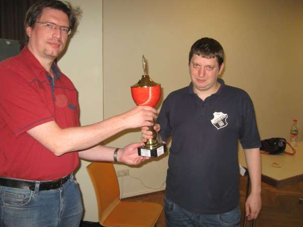
Fabian Stotyn (rechts) ist Ropte-Cup-Sieger 2017
Ropte-Cup 2017
Rangliste: Stand nach der 9. Runde
Teilnehmer TWZ Gewinn S R V Pkt.Buchh SoBerg
1. Stotyn, Fabian 2170 50 € 9 0 0 9.0 51.0 51.00
2. Hartogh, Christian 2018 30 € 6 2 1 7.0 52.5 38.00
3. Oshionwu, Nelo 1882 20 € 7 0 2 7.0 51.5 35.50
4. Nizamov, Shamil 1500 E 6 0 3 6.0 46.5 23.50
5. Rosin, Julius 1976 E 5 1 3 5.5 52.0 26.50
6. Kanzow, Alexander 1504 1. U14 5 1 3 5.5 51.5 26.50
7. Uhlendorff, Luca 1588 1. U16 5 1 3 5.5 47.0 24.00
8. Nizamova, Rita 1497 w 2. U14 5 0 4 5.0 47.5 22.00
9. Mimkes, Antal 1426 1. U12 4 2 3 5.0 46.0 20.25
10. Mimkes, Pavel 1537 3. U14 4 2 3 5.0 44.5 20.75
11. Gargulla, Matti 1027 2. U12 5 0 4 5.0 43.5 20.50
12. Karstens, Fynn 1293 2. U16 4 2 3 5.0 39.5 19.00
13. Zimmermann, Simon 928 1. U10 4 1 4 4.5 44.0 16.00
14. Liestmann, Marius 901 2. U10 4 1 4 4.5 37.5 15.50
15. Arbeiter, Irene 953 w E 4 1 4 4.5 36.0 16.25
16. dos Santos Schwab, C. 3. U12 4 1 4 4.5 35.0 14.25
17. Schilling, Rumo 916 U12 4 0 5 4.0 41.0 15.00
18. Anosowitsch, Nick 918 U12 4 0 5 4.0 38.0 14.00
19. Zimmermann, Bennet 1214 U12 4 0 5 4.0 37.5 12.00
20. von Hugo, Amelie 796 w U12 4 0 5 4.0 31.0 8.00
21. Lutze, Tom 904 U14 3 1 5 3.5 44.0 14.50
22. Paufler, Frederik U12 3 1 5 3.5 34.0 9.75
23. Terpe, Norbert 773 3. U16 3 1 5 3.5 31.5 7.50
24. Schinke, Florian 797 U16 3 1 5 3.5 28.5 6.25
25. Juric,Marian 772 U12 3 0 6 3.0 31.5 5.50
26. Magier, Moritz U12 2 2 5 3.0 29.0 5.50
27. Fahrendorff, Tristan 779 U12 1 1 7 1.5 32.0 1.50
28. Nizamov, Milan 3. U10 0 0 9 0.0 30.5 0.00
Es gab in diesem Jahr nur wenig Überrasungen beim Ropte-Cup. Spannend war es im Kampf um Platz 2, den Christian Hartogh für sich entscheiden konnte. In allen Altersklassen waren es wieder die üblichen Verdächtigen: U16: Luca Uhlendorff vor Fynn Karstens, der sich erheblich verbessert hat, und Norbert Terpe, der Pavel ein Remis abringen konnte. In der u14 siegte wieder Alexander Kanzow vor Rita Nizamova, die auch diesmal bestes Mädchen war und Pavel Mimkes. Sein Bruder Antal Mimkes konnte sich diesmal über den u12-Titel freuen und darüber einen Platz vor seinem Bruder gelandet zu sein. Die 2. und 3. Platzierten Matti Gargulla und Carlo dos Santos Schwaab, der sich als Stammspieler für das u12-Team mehr als ins Gespräch gebracht hat, haben großartig gespielt und gezeigt, dass sie noch viel Potential nach oben haben. In der u10 gab es den erwarteten Zweikampf zwischen Simon Zimmermann und Marius Liestmann, den diesmal Simon knapp für sich entscheiden konnte.
Ropte-Cup 2016
Er hat es wieder getan ! Julius Rosin konnte in einem dramatischen Endspurt doch noch seinen Titel als Ropte-Cup-Sieger und als KSV Rochade-Vereinsmeister wieder vor Christian Hartogh und Nelo Oshionwu verteidigen. Aber nicht nur an der Spitze, sondern auch in den Platzierungen aller Altersklassen war es dieses Jahr enorm spannend.
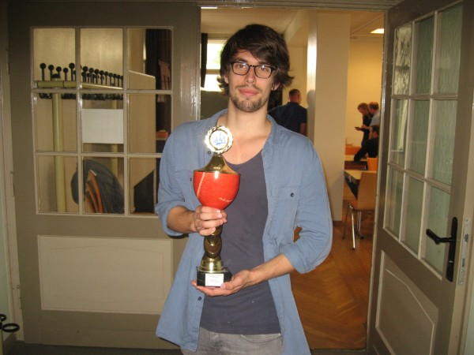
Julius Rosin Ropte-Cup-Sieger 2016
Turniermodus: 7 Runden Schweizer System
Gesamtstand:
| Platz | Name | Punkte |
| 1. | Julius Rosin | 6 P. |
| 2. | Christian Hartogh | 5,5 P. (31,5 BH) |
| 3. | Nelo Oshionwu | 5,5 P. (30 BH) |
| 4. | Arthur Semmelmaier | 5 P. (29 BH) |
| 5. | Luca Uhlendorff | 5 P. (24,5 BH) |
| 6. | Alecander Kanzow | 4,5 P. (28 BH 14,25 SoBerg) |
| 7. | Till Peter Ischebeck | 4,5 P. (28 BH 14 SoBerg) |
| 8. | Tobias Schuster | 4 P. (31,5 BH) |
| 9. | Rita Nizamova | 4 P. (29,5 BH) |
| 10. | Luan Lesser | 4 P. (24,5 BH) |
Sieger der Erwachsenen und Gesamtsieger: Julius Rosin 6 P. (+5 =2 -0)
Während Christian nach seiner Auftaktniederlage sich nach vorne kämpfen musste, was ihm mit dem 2.Platz ja auch gelang, lieferten sich Julius und Nelo von Beginn an ein Kopf an Kopf-Rennen, was Julius für sich entscheiden konnte, da Nelo noch gegen Alex ein Remis abgab. Insgesamt ein schwer erkämpfter aber verdienter Sieg für Julius Rosin.
Sieger der U18: Arthur Semmelmaier: 5 P. (+4 =2 -1)
Dass er als einziger u18-Spieler diese Altersklasse gewinnen würde, stand von vorneherein fest, aber sein Ziel war natürlich ein Platz in den Geldpreisrängen, was er allerdings nur ganz knapp und nur mit einer Niederlage verfehlte.
Sieger der U16: Luca Uhlendorff: 5 P. (+5 =0 -2)
Weiterhin kontinuierlich verbessert zeigte sich Luca, der das direkte Duell in der letzten Runde gegen Tobias Schuster, der ebenfalls ein starkes Turnier spielte, für sich entschied und sich somit den U16-Titel sichern konnte. Dritter im Bunde war Florian Schinke auf Platz 20.
Sieger der U14: Alexander Kanzow: 4,5 P. (+4 =1 -2)
Von Alex werden wir noch viele schöne Partien sehen, in Vellmar weiter verbessert und weiterentwickelt kam er wieder und gewann verdient den U14-Titel. Ein wenig enttäuscht wird Pavel Mimkes gewesen sein mit einem für ihn unbefriedigenden 12.Platz. Wir sind aber sicher, daß er vor der NDVM noch in Form kommen wird. Der dritte u14-Spieler Tilkin Dogan wurde 22.
Sieger der U12: Luan Lesser: 4 P. (+4 =0 -3)
Ganz spannend war es in der U12, in der vor der letzten Runde sich noch 6 Spieler Hoffnungen auf den U12-Titel machen konnten. Durchgesetzt hat sich ein wenig überraschend Luan Lesser 4 P. vor Antal Mimkes 4 P. (Platz 11), und Bennet Zimmermann 3,5 P. (Platz 13), der aber eine hohe Buchholzzahl aufwies.
Sieger der U10: David Tulchynsky: 3 P. (+3 =0 -4)
Das er ein großes Talent ist, hat David schon bei der Göttinger Schulschacheinzelmeisterschaft bewiesen, wo er ganz vorne dabei war. Seine drei Punkte reichten für den 19.Platz und den Sieg in der U10. Der zweite U10er Simon Zimmermann landete zwar mit 2 P. nur auf Platz 23, hatte aber die 9.beste Buchholz des Turnieres !
Sieger der Mädchen: Rita Nizamova: 4 P. (+4 =0 -3)
In Endspielen muss sie noch zulegen, aber ansonsten zeigte sich auch Rita enorm verbessert und spielte phasenweise ganz vorne mit. Insgesamt war sie auch zweitbeste U14-Spielerin. Unsere 2.Vorsitzende Irene Arbeiter landete mit 3 P. auf dem 18.Platz.
Ropte-Cup 2015
Mit 39 Teilnehmern stieg die Beteiligung beim Ropte-Cup in diesem Jahr wieder leicht an. Verdienter Sieger wurde zum zweiten Male Julius Rosin, der fast fehlerlos blieb, vor Christian Hartogh und Antonia Ziegenfuß vom SV Breitenworbis. Auch der neue Turniermodus hat der Veranstaltung gutgetan. Es wurde überall auf Sieg gespielt.
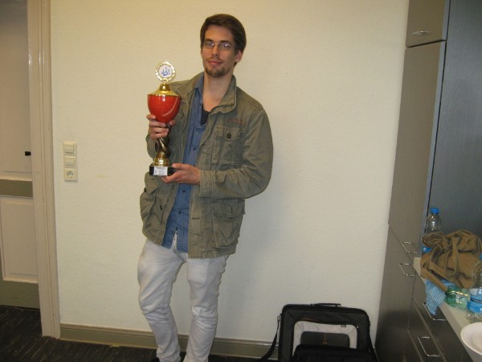
Ropte-Cup-Sieger 2015: Julius Rosin
Turniermodus: 9 Runden Schweizer System (3-Punkte-Regel)
Gesamtstand:
| Platz | Name | Punkte |
| 1. | Julius Rosin | 25 P. (+8=1-0) |
| 2. | Christian Hartogh | 24 P. |
| 3. | Antonia Ziegenfuß, SV Breitenworbis | 19 P. |
| 4. | Arthur Semmelmaier | 18 P. (150 BH) |
| 5. | Nelo Oshionwu | 18 P. (148 BH) |
| 6. | Till Peter Ischebeck | 18 P. (137 BH) |
| 7. | Arved Mindermann | 18 P. (113 BH) |
| 8. | Tobias Schuster | 17 P. |
| 9. | Jonathan Heutelbeck | 16 P. (151 BH) |
| 10. | Pavel Mimkes | 16 P. (143 BH) |
Sieger der Erwachsenen und Gesamtsieger: Julius Rosin 25 P. (+8=1-0)
Der Titel in diesem Jahr für Julius war absolut verdient, er spielte so gut wie fehlerlos, dabei lieferte er sich eine ganz heiße Schlacht mit Volker Liestmann. Titelverteidiger Nelo Oshionwu blieb in diesem Jahr völlig chancenlos und landete am Ende auf einen für ihn enttäuschenden 5.Platz. Auch Till Peter ischebeck konnte den Ansturm vieler Jugendlicher noch abwehren und wurde 6. Die weiteren Platzierungen: Volker Liestmann 12., HansGeorg Schuster 21.
Sieger der U18: Christian Hartogh 24 P. (+8=0-1) = 2.Platz
Nur 2 Teilnehmer gab es in der U18. Der Sieg von Christian war keine große Überraschung, er unterlag nur dem Turniersieger. Jonathan Heutelbeck spielte sehr solide und es gelang ihm ein Platz unter den Top 10 (9.).
Sieger der U16: Arthur Semmelmaier 18 P. (+6=0-3) = 4.Platz
Auch hier war der Sieg keine allzugroße Überraschung. Mit ein bisschen offensiverer Spielweise wäre für Arthur vieleicht sogar noch mehr rin gewesen. Enorm verbessert zeigte sich aber Artur Balliel mit Platz 20 und sehr hoher Buchholz. Wenn er das Arbeiten lernt, ist in Zukunft noch viel mehr möglich.....
Sieger der U14: Tobias Schuster 17 P. (+5=2-2) = 8.Platz
Sehr spannend war es aber in dieser Altersklasse. Tobias Schuster verlor ab Runde 3 keine einzige Partie mehr und rollte das Feld von hinten auf. Mathis Diederichsen spielte gewohnt sicher und wurde mit Platz 13, Zweitbester seiner Altersklasse. Dritter der Jahrgänge 01/02 wurde Marcel Kuhlemeyer mit Platz 14. Die weiteren Platzierungen: Adrian Bollig 18., Luca Uhlendorff 24., Norbert Terpe 27., Florian Schinke 28., Phillip Herzig 33.
Sieger der U12: Arved Mindermann 18 P. (+6=0-3) = 7.Platz
In der U12 gab es eine Sensation, denn eigentlich wurden hier Larissa Ziegenfuß vom SV Breitenworbis und Pavel Mimkes höher gehandelt. Aber mit etwas Auslosungsglück und auch enormer spielerischer Verbesserung gelang Arved mit Platz 7 die Überraschung des Turniers. Pavel Mimkes wurde mit hoher Buchholz 10., und Drittbeste dieser Altersklasse, einen Platz hinter Pavel landete Darja Rizo-Wellmann, die einen starken Schlußspurt hinlegte. Die weiteren Platzierungen: Rita Nizamova 15., Larissa Ziegenfuß 19., Maximilian Neumann 22., Tim Bräuer 29., Morris Schütte 30., Jannik Dornbusch 32., Gina Lambert 34., Nils Matthießen 39.
Sieger der U10: Matti Gargulla 15 P. (+5=0-4) = 16.Platz
Auch in der U10 gab es eine kleine Überraschung: Matti Gargullas Rechen-und Schachkünste gingen auf und er holte sich nicht unverdient den Titel in der U10. Antal Mimkes, der Favorit in der U10 spielte noch nicht konstant genug und landete genau einen Platz dahinter. Dritter dieser Altersklasse wurde Bennet Zimmermann auf Platz 25, der damit seinen Anspruch auf einen Platz in der 1.Mannschaft von Rochade bei der LJMM untermauert hat. Die weiteren Platzierungen: Amelie von Hugo 26., Luckas Kracke 31., Constantin Jäger 35., Marian Juric 36., Luan Lesser 38.
Sieger der U8: Simon Zimmermann 13 P. (+4=1-4) = 23.Platz
Völlig verdient war hier der Sieg von Simon Zimmerman, der nur 4 Partien verlor und auf einem hervorragenden 23. Platz landete. Marius Liestmann fuhr ebenfalls schon 3 Siege ein und wurde 37.
Siegerin der Mädchenwertung: Antonia Ziegenfuß 19 P. (+6=1-2) = 3.Platz
10 Jahre alt ist sie und man kann wirklich nur mit der Zunge schnalzen, wenn man gesehen hat, was die amtierende deutsche Meisterin für ein Schach spielen kann. Wenn sie die Freude am Spiel behält, wachsen hier mit ihrer Schwester Larissa zwei ganz große Talente heran.
Fazit: Auch in diesem Jahr ist das Spielniveau wieder gestiegen, das hat man allein schon daran gesehen, daß ein amtierender Bezirksmeister abgeschlagen im unteren Mittelfeld gelandet ist. Wir freuen uns auf weitere spannende Wettkämpfe im nächsten Jahr.
Ropte-Cup 2014
Auch in diesem Jahr war die Teilnehmerzahl beim Ropte-Cup rückläufig. Der Hauptgrund war wohl eine seit Wochen vorherrschende Erkältungswelle. Zum erstenmal gewann Nelo Oshionwu den Cup vor dem punktgleichen Christian Hartogh und Pavel Mimkes.
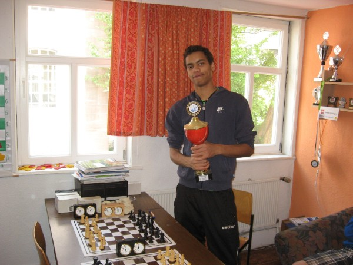
Ropte-Cup-Sieger 2014: Nelo Oshionwu
Turniermodus: 7 Runden, Schweizer System
Gesamtstand:
| Platz | Name | Punkte | Buchholzpunkte |
| 1. | Nelo Oshionwu | 6,5 | 34,5 |
| 2. | Christian Hartogh | 6,5 | 30 |
| 3. | Pavel Mimkes | 5 | 33 |
| 4. | Julius Rosin | 5 | 31 |
| 5. | Till Peter Ischebeck | 5 | 30,5 |
| 6. | Manuel Drehwald | 5 | 30,5 |
| 7. | Alexander Vinnen | 5 | 27 |
| 8. | Alexander Kanzow | 4,5 | 29,5 |
| 9. | Florian Schinke | 4 | 28 |
| 10. | Arved Mindermann | 4 | 28 |
| ....... |
Sieger der Erwachsenen: Till Peter Ischebeck 5 P. = Platz 5
Ein sehr guter 5.Platz im Gesamtklassment für Till, der damit seine gute Frühform unterstrich. Auf den weiteren Plätzen landeten Hansgeorg Schuster 3,5 P. (15.), der sehr couragiert begann, aber zum Ende des Turnieres abbaute, und Volker Liestmann auf Platz 21 mit 3 P., der seine Galavorstellung in der Bezirksliga nicht bestätigen konnte.
Sieger der U18: Nelo Oshionwu 6,5 P. = Platz 1
Nelo gewann nicht nur die U18-Wertung, sondern wurde auch verdient und ungeschlagen Vereinsmeister. Titelverteidiger Julius Rosin blieb in diesem Jahr chancenlos und wurde mit 5 P. vierter. Mit genausoviel Punkten landete Manuel Drehwald, der mit 4 aus 4 startete, knapp dahinter auf Platz 6.
Sieger der U16: Christian Hartogh 6,5 P. = Platz 2
Nur 2 Vertreter in der U16. Es fehlten hier starke Spieler wie Arthur Semmelmaier und Robert Mogharrab. Christian Hartogh, der der Einzige war, der Nelo auf den Fersen blieb, hatte nur das Pech, daß er in den Anfangsrunden leichtere Gegner zugelost bekam, so daß ihm in der Endabrechnung ein paar Buchholz fehlten. Auf Platz 31 landete Sofia Salgado mit 2 P.
Sieger U14: Florian Schinke 4 P. = Platz 9
Nachdem Favorit Artur Balliel absagen musste, gab es in dieser Altersklasse einige Kandidaten für den 1.Platz. Durchgesetzt hat sich schlußendlich ein wenig überraschend aber völlig verdient Florian Schinke mit 4 P., der sich erheblich verbessert zeigte und sensationell mit Platz 9 unter den Top 10 landete. Fynn Karstens 4 P. (Platz 14), und Nils Sudratjat 3,5 P. (Platz 17), folgten auf den Plätzen.
Sieger U12: Arved Mindermann 4 P. = Platz 10
Spannend war es auch in der U12, hier gab es gleich 5 Anwärter auf den Titel, und das obwohl Talente wie Tobias Schuster und Mathis Diederichsen fehlten. Am Ende hatte Arved Mindermann mit 4 P. (Platz 10 !) die Nase in einer Milimeterentscheidung knapp vorn vor Luca Uhlendorff 4 P. (Platz 11) mit einem Buchholzpunkt weniger und Darja Rizo-Wellmann mit 4 P. und 5,5 Buchholz weniger.
Sieger der U10: Pavel Mimkes 5 P. = Platz 3
Über Landesmeister Pavel Mimkes Leistung braucht eigentlich nichts mehr gesagt zu werden. aber bis zur letzten Runde war ihm Alexander Kanzow auf den Fersen, der mit 4,5 P. (Platz 8 !!) erreichte, und der mit einem Sieg in der Abschlußrunde auch Dritter der Abschlußtabelle hätte werden können !! Dritter wurde überraschend mit 3,5 P. auf Platz 18 Amelie von Hugo, die erst seit 3 Monaten spielt.
Sieger der U8: Simon Zimmermann 3,5 P. = Platz 19
Eine faustdicke Überraschung gab es in dieser Altersklasse. Der große Favorit Antal Mimkes (3 P. Platz 20) hatte Pech, daß er in den letzten Runden starke Gegner zugelost bekam und musste in der letzten Runde Simon Zimmermann 3,5 P. (Platz 19) an sich vorbeiziehen lassen. Der Zweitjüngste Marius Liestmann holte 2,5 P. und wurde 27.
Sieger der U6: Lasse Anosowitsch 2 P. = Platz 32
6 Jahre alt ist er, und er holte schon satte 2 Punkte und landete auf Platz 32.
Siegerin der Damenwertung: Irene Arbeiter 4 P. = Platz 12
Irene Arbeiter (4 P., Platz 12) spielte in diesem Turnier das beste Schach ihres Lebens und holte sich verdient den Damenpokal. Knapp dahinter postierten sich Darja Rizo Wellmann 4 P., und Rita Nizamova mit 3,5 P. und hoher Bochholz auf Platz 16.
Ropte-Cup 2013
Weil der Ropte-Cup diesmal mit einem Jugendfußballturnier konkurrieren musste, kamen dieses Jahr nur 44 Spieler zum Turnier. Dennoch erlebten die Teilnehmer ein spannendes, gut organisiertes und faires Turnier, das mit Julius Rosin einen absolut verdienten Sieger sah. Er konnte sich über den Gewinn von über 100 Euro freuen. Gute Leistungen erbrachten auch die Gastspieler Ruidi Xin aus Hamburg und der Bovender Mario Seifert, die ebenfalls Chancen auf den Sieg in der Gesamtwertung hatten.
Turniermodus: 7 Runden, Schweizer System
Gesamtstand:
| Platz | Name | Punkte | Buchholzpunkte |
| 1 | Julius Rosin | 6,5 P. | |
| 2 | Thomas Post | 6 P. | |
| 3 | Ruidi Xin (SC Diogenes Hamburg) | 5,5 P. | 30 BP. |
| 4 | Mario Seifart (Plesse Bovenden) | 5,5 P. | 29,5 BP. |
| 5 | Martin Sokor (Hildesheimer SV) | 5 P. | |
| 6 | Manuel Drehwald | 5 P. | |
| 7 | Alexander Vinnen | 5 P. | |
| 8 | Nelo Oshionwu | 4,5 P. | |
| 9 | Mark Gorbach (SC Diogenes Hamburg) | 4,5 P. | |
| 10 | Christian Hartogh | 4,5 P. | |
| ... | ... | ... |
Erwachsenen-Endstand:
| Platz | Name | Punkte | Buchholzpunkte |
| 1 | Thomas Post | 6 P. | |
| 2 | Ruidi Xin | 5,5 P. | 30 BP. |
| 3 | Mario Seifart (Plesse Bovenden) | 5,5 P. | 29,5 BP. |
Auch die Erwachsenen bekamen diesmal Urkunden, auch deshalb weil einige mitspielten, obwohl sie keine Chance auf den Turniersieg hatten. Gute Leistungen erbrachten Ruidi Xin, Mario Seifart und ebenso der Hildesheimer Martin Sokor, der sich erstaunlicherweise den 5. Platz in der Gesamtwertung erspielte und den Ropte-Cup als sein bislang bestes Turnier, das er in seinem Leben gespielt habe, beschreibt.
U18-Endstand:
| Platz | Name | Punkte |
| 1 | Julius Rosin | 6,5 P. |
| 2 | Nelo Oshionwu | 4,5 P. |
| 3 | Mark Gorbach (SC Diogenes Hamburg) | 4,5 P. |
Bezirksmeister Julius Rosin gewann natürlich auch die U18-Wertung mit ganzen 2 Punkten Vorsprung vor dem DWZ-Favoriten und U18-Bezirksmeister Nelo Oshionwu und dem Titelverteidiger Mark Gorbach, die beide dieses Jahr chancenlos waren.
U16-Endstand:
| Platz | Name | Punkte | Buchholzpunkte |
| 1 | Manuel Drehwald | 5 P. | 29,5 BP. |
| 2 | Alexander Vinnen | 5 P. | 27 BP. |
| 3 | Christian Hartogh | 4,5 P. |
Ein ganz starkes Turnier des U16-Bezirksvizemeisters Manuel Drehwald, der sogar Chancen auf den Gesamtsieg hatte. Auch Alexander Vinnen meldete mit dem 2. Platz in der U16-Wertung einen Stammplatz in der ersten Rochade-Mannschaft an. U16-Bezirksmeister Christian Hartogh spielte nicht aggressiv genug und musste gegen die vorderen Spieler wichtige Punkte lassen.
U14-Endstand:
| Platz | Name | Punkte | Platz im Gesamtstand |
| 1 | Robert Mogharrab | 4,5 P. | 11 |
| 2 | Artur Balliel | 4 P. | 12 |
| 3 | Sergej Tkach (vereinslos) | 3 P. | 33 |
Ein Kopf-an-Kopf-Rennen gab es in der U14. Sowohl Titelverteidiger Robert Mogharrab als auch Artur Balliel, der sich erheblich verbessert zeigte, hätten diese Wertung gewinnen können. Am Ende gewann der Glücklichere von beiden. Sergej Tkach zeigte in seinem zweiten Turnier eine ordentliche Leistung.
U12-Endstand:
| Platz | Name | Punkte | Buchholzpunkte | Platz im Gesamtstand |
| 1 | Mathis Diederichsen | 4 P. | 27,5 BP. | 14 |
| 2 | Fynn Karstens | 4 P. | 26 BP. | 16 |
| 3 | Tobias Schuster | 4 P. | 24,5 BP. | 20 |
Unglaublich spannend war es in der U12. Vor der letzten Runde hatten sechs (!) Teilnehmer noch Chancen auf den Sieg. Mathis Diederichsen setzte sich schlussendlich knapp vor dem Titelverteidiger Fynn Karstens und Tobias Schuster durch.
U10-Endstand:
| Platz | Name | Punkte | Buchholzunkte | Platz im Gesamtstand |
| 1 | Pavel Mimkes | 4 P. | 27,5 BP. | 15 |
| 2 | Fynn Gründel | 4 P. | 25 BP. | 18 |
| 3 | Morris Schütte | 3 P. | 28 BP. | 26 |
| 4 | Moritz Bachler (vereinslos) | 3 P. | 22 BP. | 29 |
| 5 | Mattis Treubel (vereinslos) | 3 P. | 17,5 BP. | 34 |
Pavel Mimkes wurde wieder verdient Sieger in der U10. Die Silbermedaille für Fynn Gründel vor Bezirksmeister Morris Schütte war allerdings eine Überraschung. Insgesamt verlor Fynn nur ganze zwei Partien. Auch die beiden Vereinslosen Moritz Bachler und Mattis Treubel konnten in ihrem allerersten Turnier durchaus überzeugen.
U-8-Endstand:
| Platz | Name | Punkte | Platz im Gesamtstand |
| 1 | Bastian Zeiler (vereinslos) | 4 P. | 21 |
| 2 | Antal Mimkes | 3,5 P. | 22 |
| 3 | Tjade Keydel | 3 P. | 30 |
Auch hier landeten bekannte Gesichter auf den vorderen Plätzen: Titelverteidiger Bastian Zeiler konnte mit ein bisschen Glück seinen 1. Platz vom Vorjahr verteidigen, denn der zweitplatzierte Antal Mimkes hatte 7,5 Buchholzpunkte mehr "auf den Rippen". Tjade Keydel wurde souverän dritter vor zwei anderen U-8-Spielern, die keine Chance auf die Medaillenplätze hatten.
Mädchen-Wertung:
| Platz | Name | Punkte | Bucholzpunkte | Platz im Gesamtstand |
| 1 | Darja Rizo-Wellmann | 4 P. | 13 | |
| 2 | Irene Arbeiter | 3,5 P. | 24 | |
| 3 | Kaja Sturmfels (Hainberg-Gymnasium) | 3 P. | 19,5 BP. 5,5 vBP. | 31 |
| 4 | Melanie Muxfeldt | 3 P. | 19,5 BP. 3,5 vBP. | 32 |
Die Erfolgsserie von Darja Rizo-Wellmann scheint kein Ende zu nehmen. Völlig verdient gewann die Jüngste die Damenwertung vor der zweiten Vorsitzenden Irene Arbeiter. Kaja Sturmfels von der Deutschen Schachschule, dem Hainberg-Gymnasium, konnte mit der Bronzemedaille ebenfalls ein Ausrufezeichen setzen. Auch Melanie Muxfeldt darf mit ihren drei Punkten zufrieden sein.
Impressionen:
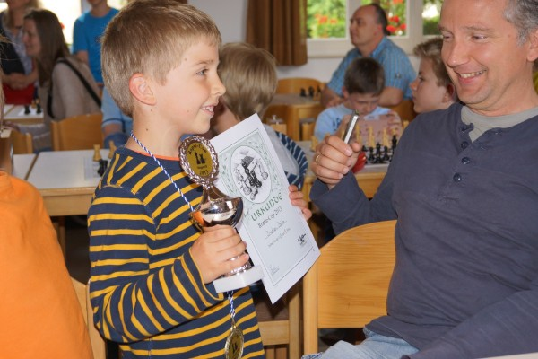
Das ist der Beweis - "Ich hab' gewonnen!"
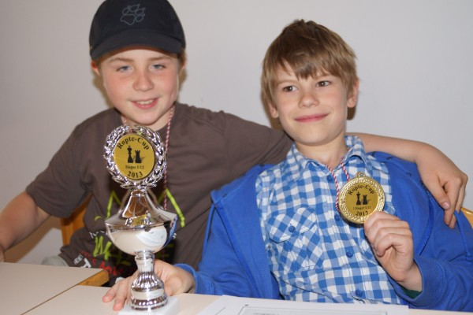
Zwei Sieger in trauter Eintracht: Tobias Schuster und Mathis Diederichsen
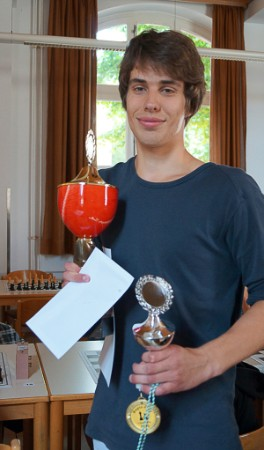
Ropte-Cup-Sieger 2013: Julius Rosin
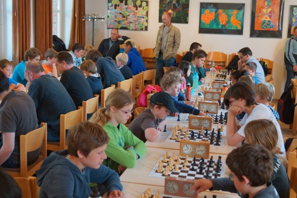
Allerlei Prominenz an den Brettern...
Ropte-Cup 2012
In diesem Jahr öffnete der KSV Rochade Göttingen seine Pforten und trug zum allerersten Male seine Vereinsmeisterschaft als Open aus. Insgesamt beteiligten sich 50 Spieler, wobei "nur" 34 Teilnehmer Rochade-Mitglieder waren. Der KSV Rochade Göttingen, der erst im August 2008 gegründet wurde, und der mittlerweile der zweitgrößte Verein des Bezirkes Südniedersachsen und der kinderreichste Verein in ganz Niedersachsen ist, feierte dabei seine Ernennung zum Topverein im Jugendbereich in der Bundesrepublik Deutschland.
Und so war auch der Turniermodus für die Kinder maßgeschneidert: In den ersten drei Runden spielten nur Altersgleiche gegeneinander und ab der vierten Runde wurde frei gelost, was unter anderem dazu führte, dass so mancher Erwachsener von den Kindern das Fell über die Ohren gezogen bekam.
Turniermodus: 7 Runden Schweizer System
Gesamtstand des Ropte-Cups:
| Platz | Name | Punkte | Buchholzpunkte | So.Berg-Wertung |
| 1 | Mark Gorbach (SC Diogenes Hamburg) | 6 P. | 35,5 BP. | 29,5 SB. |
| 2 | Mario Seifart (vereinslos) | 6 P. | 33,5 BP. | 28,25 SB. |
| 3 | Christian Hartogh | 6 P. | 31 BP. | 25 SB. |
| 4 | Thomas Post | 5,5 P. | 30,5 BP. | |
| 5 | Nelo Oshionwu | 5,5 P. | 30,5 BP. | |
| 6 | Frank Dittrich (SC Leinefelde) | 5,5 P. | ||
| 7 | Manuel Drehwald | 5 P. | 30,5 BP. | |
| 8 | Fynn Karstens (vereinslos) | 5 P. | 29 BP. | |
| 9 | Jonathan Heutelbeck | 5 P. | 29 BP. | |
| 10 | Robert Mogharrab | 5 P. | 27 BP. | |
| ... | ... | ... |
Turniersieger wurde der "verlorene Sohn" U-18-Spieler Mark Gorbach, der mittlerweile für den SC Diogenes Hamburg spielt, vor dem ungeschlagenen vereinslosen Mario Seifart und Christian Hartogh vom KSV Rochade, der auch bester U16-Spieler des Turnieres wurde.
Sieger der U18:
| Platz | Name | Punkte | Buchholzpunkte | Platz im Gesamtstand |
| 1 | Mark Gorbach (SC Diogenes Hamburg) | 6 P. | 35,5 BP. | 1 |
| 2 | Nelo Oshionwu | 5,5 P. | 30,5 BP. | 5 |
| 3 | Julius Rosin | 5 P. | 26,5 BP. | 11 |
Sieger der U16:
| Platz | Name | Punkte | Buchholzpunkte |
| 1 | Christian Hartogh | 6 P. | 31 BP. |
| 2 | Manuel Drehwald | 5 P. | 30,5 BP. |
| 3 | Jonathan Heutelbeck | 5 P. | 29 BP. |
Sieger der U14:
| Platz | Name | Punkte | Buchholzpunkte | Platz im Gesamtstand |
| 1 | Robert Mogharrab | 5 P. | 27 BP. | 10 |
| 2 | Arthur Semmelmeier | 4 P. | 26 BP. | 21 |
| 3 | Artur Balliel | 3,5 P. | 23,5 BP. | 25 |
In der U14 siegte völlig souverän Robert Mogharrab, der im Endklassement auch unter den ersten 10 zu finden war.
Sieger der U12:
| Platz | Name | Punkte | Buchholzpunkte | Platz im Gesamtstand |
| 1 | Fynn Karstens (vereinslos) | 5 P. | 29 BP. | 8 |
| 2 | Torben Fabig (vereinslos) | 4 P. | 27,5 BP. | 17 |
| 3 | Tobias Schuster | 4 P. | 26,5 BP. | 18 |
Doch in der sehr stark besetzten U12 gab es mehrere faustdicke Überraschungen: Stadtmeister Mathis Diederichsen wurde "nur" 4., Tobias Schuster 3., knapp davor Torben Fabig. U-12-Sieger und in der Endabrechnung 8. mit 5 Punkten aus 7 Partien und hoher Buchholz wurde Fynn Karstens in seinem allerersten Turnier!
Sieger U10:
| Platz | Name | Punkte | Buchholzpunkte | Platz im Gesamtstand |
| 1 | Pavel Mimkes | 4 P. | 28 BP. | 16 |
| 2 | Julius Dittrich | 4 P. | 24 BP. | 22 |
| 3 | Morris Schütte | 3 P. | 25 BP. | 28 |
In der U10 konnte sich erwartungsgemäß Pavel Mimkes durchsetzen, die U8 gewann mit 3,5 P. das große Talent Bastian Zeiler und U6-Sieger wurde Pavels jüngerer Bruder Antal mit 3 P.!
Sieger der U8:
| Platz | Name | Punkte | Buchholzpunkte | Platz im Gesamtstand |
| 1 | Bastian Zeiler (vereinslos) | 3,5 P. | 20,5 BP. | 26 |
| 2 | Tjade Keydel | 2 P. | 21,5 BP. | 42 |
| 3 | Thorben Diederichsen | 2 P. | 16,5 BP. | 44 |
Sieger der U6:
| Platz | Name | Punkte | Buchholzpunkte | Platz im Gesamtstand |
| 1 | Antal Mimkes | 3 P. | 27,5 BP. | 27 |
| 2 | Aidan Richter (vereinslos) | 0 P. aus 2 Partien | 5 BP. | 50 |
Beste Rochade-Spieler/ Ropte-Cup-Sieger:
Platz | Name | Punkte | Buchholzpunkte |
| 1 | Mark Gorbach (SC Diogenes Hamburg) | 6 P. | 35,5 BP. |
| 2 | Christian Hartogh | 6 P. | 31 BP. |
| 3 | Thomas Post | 5,5 P. | 30,5 BP. |
Es war nur schade, dass wir es nicht geschafft haben, Pavels und Antals jüngerer Schwester die Schachregeln rechtzeitig beizubringen, sie wäre dann in der U4 gestartet. Nun ja, nächstes Jahr...
Das sehr harmonisch verlaufende Turnier endete mit einer Rede vom DSJ-Geschäftsführer Jörg Schulz, in dem er noch einmal die herausragende Stellung im Jugendschach von Rochade Göttingen heraustellte und dem zweiten Vorsitzenden Timo Schimke die Verleihung zum TOPVEREIN übergab.
Bilder vom Ropte-Cup:
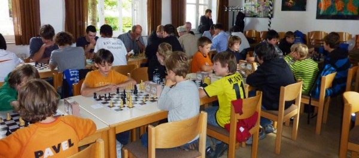
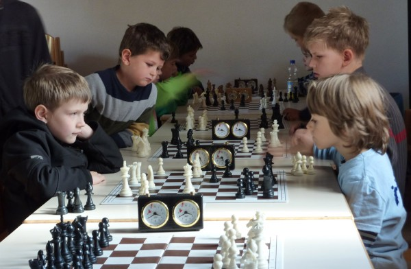
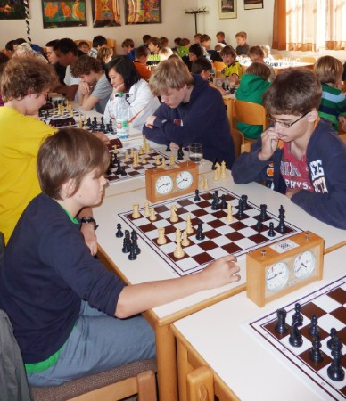
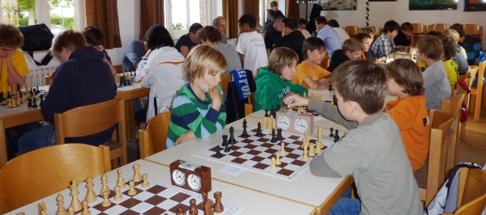

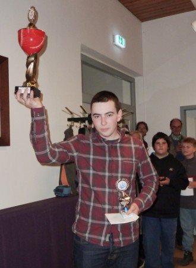
So sehen Sieger aus: Mark Gorbach gewinnt den Ropte-Cup.
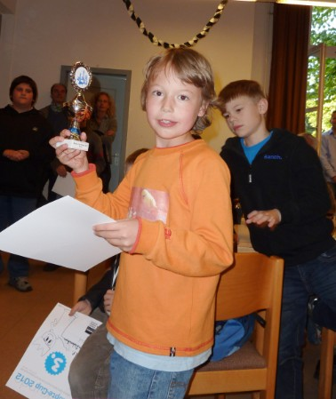
Der Schrecken der vorderen Bretter: Pavel Mimkes (8 Jahre alt !)
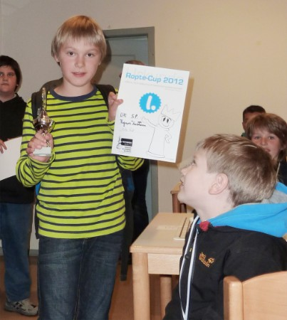
Fynn Karstens: Sein allererstes Turnier! (5 P. aus 7 Partien)
Vereinsmeisterschaft des KSV Rochade Göttingen 2011
Modus: 8 Gruppen à 4 Teilnehmer; Die beiden Ersten ziehen in die K.O.-Runde im September ein, wobei ein Gruppensieger gegen einen Gruppenzweiten gelost wird. Ab dem Viertelfinale wird frei gelost. In den Vorrunden spielt jeder gegen jeden einmal. Bei Punktgleichheit entscheidet:
1. direkter Vergleich, 2. Anzahl der Siege, 3. Anzahl der Schwarzsiege, 4. Schnellschach-entscheidungspartie 20 min. (wobei der Spieler weiß hat, der in der Vorrunde schwarz hatte; bei Remis gibt es eine Blitzpartie von 5 min.; bei abermaligem Remis ein Blitzentscheid 6 vs. 4 min.)
Ab dem Achtelfinale werden zwei Partien gespielt, wobei der Gruppensieger zuerst Schwarz hat, bei 1:1 gibt es zwei Schellschachpartien, dann evtl. 2 Blitzpartien mit anschließendem Blitzentscheid.
Im Finale gibt es nur eine Entscheidungspartie, die Farbe wird gelost. Bei Remis folgen Schnellschachpartie, Blitzpartie (s.o.).
Im Januar/Februar spielen 1-4 und 2-3, im März/April spielen 3-1 und 4-2, im Mai und Juni 1-2 und 3-4.
Bedenkzeit: 2 Std. 40 Züge + 1/2 Stunde für den Rest
Das Turnier wird DWZ ausgewertet!
Hinweis: Der Weißspieler hat Heimrecht und kümmert sich darum, dass die Partie rechtzeitig zustandekommt, besorgt das Material UND meldet bei Nelo (nelo.o@web.de) per E-Mail das Ergebnis!
Die Auslosung ergab folgende Gruppeneinteilung:
Gruppe A:
| 1) | 2) | 3) | 4) | Punkte | |
| 1) Christian Hartogh | x | 1 | 1 | 1 | 3 P. |
| 2) Mark Gorbach | 0 | x | 1 | 1 | 2 P. |
| 3) Daniel Peschkov | 0 | 0 | x | 1 | 1 P. |
| 4) Arthur Semmelmeier | 0 | 0 | 0 | x | 0 P. |
Da Mark verzichtet, steht Daniel als Gruppenzweiter im Achtelfinale.
Gruppe B:
| 1) | 2) | 3) | 4) | Punkte | |
| 1) Irene Arbeiter | x | 0 | 0 | 1 | 1 P. |
| 2) Alexander Vinnen | 1 | x | 0,5 | 1 | 2,5 P. |
| 3) Andre Butkevich | 1 | 0,5 | x | 1 | 2,5 P. |
| 4) Marc Schachtebeck | 0 | 0 | 0 | x | 0 P. |
Alex wird Gruppensieger aufgrund der mehr erzielten Schwarzsiege.
Gruppe C:
| 1) | 2) | 3) | 4) | Punkte | |
| 1) Tony Coeurjoly | x | 0,5 | 1 | 1 | 2,5 P. |
| 2) Maximilian Langsch | 0,5 | x | 1 | 1 | 2,5 P. |
| 3) Michael Domke | 0 | 0 | x | 1 | 1 P. |
| 4) Mathis Diederichsen | 0 | 0 | 0 | x | 0 P. |
Schnellschachentscheid: Maximlian Langsch - Tony Coeurjoly = 0,5: 0,5; Blitz: 0,5:1,5. Tony wird damit Gruppensieger.
Gruppe D:
| 1) | 2) | 3) | 4) | Punkte | |
| 1) Manuel Drehwald | x | 0,5 | 1 | 1 | 2,5 P. |
| 2) Tim Würzberg | 0,5 | x | 0,5 | 1 | 2 P. |
| 3) Jan Raffel | 0 | 0,5 | x | 1 | 1,5 P. |
| 4) Carl Anderssohn | 0 | 0 | 0 | x | 0 P. |
Manuel wird erster, Tim zweiter.
Gruppe E:
| 1) | 2) | 3) | 4) | Punkte | |
| 1) Dieter Unger | x | 1 | 1 | 1 | 3 P. |
| 2) Piero Costanzo | 0 | x | 1 | 1 | 2 P. |
| 3) Robert Mogharrab | 0 | 0 | x | 1 | 1 P. |
| 4) Artur Balliel | 0 | 0 | 0 | x | 0 P. |
Dieter wird erster, Piero zweiter.
Gruppe F:
| 1) | 2) | 3) | 4) | Punkte | |
| 1) Nelo Oshionwu | x | 1 | 0 | 1 | 2 P. |
| 2) Florian Fischer | 0 | x | 0 | 1 | 1 P. |
| 3) Jakob Oldenburg | 1 | 1 | x | 1 | 3 P. |
| 4) Oskar Meier | 0 | 0 | 0 | x | 0 P. |
Jakob wird erster, Nelo zweiter.
Gruppe G:
| 1) | 2) | 3) | 4) | Punkte | |
| 1) Thomas Post | x | 1 | 1 | 1 | 3 P. |
| 2) Jens Vinnen | 0 | x | 1 | 1 | 2 P. |
| 3) Timo Schimke | 0 | 0 | x | 1 | 1 P. |
| 4) Kaja Hoffmeister | 0 | 0 | 0 | x | 0 P. |
Thomas wird erster, Jens zweiter.
Gruppe H:
| 1) | 2) | 3) | 4) | Punkte | |
| 1) Julius Rosin | x | 1 | 1 | 1 | 3 P. |
| 2) Jonathan Heutelbeck | 0 | x | 1 | 1 | 2 P. |
| 3) Jonas Nizar Dihazi | 0 | 0 | x | 0 | 0 P. |
| 4) Kilian Geistlich | 0 | 0 | 1 | x | 1 P. |
Julius wird erster, Jonathan zweiter.
Achtelfinale:
| Paarung | Ergebnis | Schnellschach | Blitz |
| Christian Hartogh - Maximilian Langsch | 2:0 | ||
| Dieter Unger - Tim Würzberg | 1,5:0,5 | ||
| Alexander Vinnen - Piero Costanzo | 1,5:0,5 | ||
| Manuel Drehwald - Andre Butkevich | 2:0 | ||
| Tony Coeurjoly - Jens Vinnen | 2:0 | ||
| Jakob Oldenburg - Daniel Peschkov | 0:2 | ||
| Julius Rosin - Nelo Oshionwu | 1:1 | 1:1 | 0,5:1,5 |
| Thomas Post - Jonathan Heutelbeck | 1:1 | 1:1 | 2:1 |
Damit sind Christian, Dieter, Alex, Manuel, Tony, Daniel, Nelo und Thomas im Viertelfinale
Viertelfinale:
| Paarung | Ergebnis | Schnellschach |
| Christian Hartogh - Dieter Unger | 2:0 | |
| Alexander Vinnen - Manuel Drehwald | 0:2 | |
| Tony Coeurjoly - Daniel Peschkov | 1:1 | 2:0 |
| Nelo Oshionwu - Thomas Post | 1:1 | 0:2 |
Damit sind Christian, Manuel, Tony und Thomas im Halbfinale.
Halbfinale:
| Paarung | Ergebnis | Schnellschach |
| Christian Hartogh - Manuel Drehwald | 1:1 | 2:0 |
| Tony Coeurjoly - Thomas Post | 1:1 | 0:2 |
Damit sind Christian und Thomas im Finale.
Finale:
Paarung | Ergebnis |
| Christian Hartogh - Thomas Post | 0:1 |
Diesmal brauchte der Vorsitzende des KSV Rochade Göttingen eine Menge Glück, um seinen Titel als Vereinsmeister zu verteidigen. Denn bereits im Achtelfinale drohte ihm das Aus gegen Jonathan Heutelbeck im Blitzstechen. Im Viertelfinale gegen Nelo Oshionwu und im Halbfinale gegen Tony Coeurjoly setzte sich gerade noch so die größere Erfahrung durch.
Erfreulich war auch die goße Anzahl an spannenden Partien. In diesem Jahr wird unsere Vereinsmeisterschaft allerdings als 7-rundiges Open ausgespielt.
Vereinsmeisterschaft KSV Rochade Göttingen 2010
Paarungstafeln für die Gruppen: 1. Runde: 1-5; 3-2; 2. Runde: 2-1; 5-4; 3. Runde: 4-2; 1-3; 4. Runde: 3-4; 2-5; 5. Runde: 5-3; 4-1.
Bei Punktgleichheit zählt 1. direkter Vergleich, 2. Anzahl der Siege, 3. Anzahl der Schwarzsiege, 4. Vereins-DWZ, 5. offizielle DWZ, 6. Würfelschachpartie.
Achtelfinale im September: im K.O.-Modus gibt es zwei Partien, wobei der Erstgenannte Weiß hat, endet diese 1:1, gibt es zwei Schnellschachpartien (30min.), danach evtl. zwei Blitzpartien, danach eine Blitzpartie 6 zu 4min.
Bedenkzeit: 2 Std. 40 Züge + 1/2 Stunde für den Rest
Das Turnier wird DWZ ausgewertet !
Hinweis: Der Weißspieler hat Heimrecht und kümmert sich darum, dass die Partie rechtzeitig zustandekommt, besorgt das Material UND meldet bei Nelo (nelo.o@web.de) per E-Mail das Ergebnis!
Gruppeneinteilung:
Gruppe 1:
| 1) | 2) | 3) | 4) | 5) | Punkte | |
| 1) Thomas Post | x | 1 | 1 | 1 | 1 | 4 P. |
| 2) Manuel Drehwald | 0 | x | 1 | 1 | 0,5 | 2,5 P. |
| 3) Arthur Semmelmeier | 0 | 0 | x | 0,5 | 1 | 1,5 P. |
| 4) Marc Schachtebeck | 0 | 0 | 0 | 1 | x | 1 P. |
| 5) Viktoria Borissova | 0 | 0,5 | 0,5 | x | 0 | 1 P. |
Gruppe 2:
| 1) | 2) | 3) | 4) | 5) | Punkte | |
| 1) Jonathan Heutelbeck | x | 1 | 1 | 1 | 1 | 4 P. |
| 2) Alexander Vinnen | 0 | x | 1 | 1 | 1 | 3 P. |
| 3) Daniel Peschkov | 0 | 0 | x | 1 | 1 | 2 P. |
| 4) Jakob Oldenburg | 0 | 0 | 0 | x | 1 | 1 P. |
| 5) Kaja Hoffmeister | 0 | 0 | 0 | 0 | x | 0 P. |
Gruppe 3 :
| 1) | 2) | 3) | 4) | 5) | Punkte | |
| 1) Julius Rosin | x | 1 | 1 | 1 | 1 | 4 P. |
| 2) Piero Costanzo | 0 | x | 0,5 | 1 | 1 | 2,5 P. |
| 3) Niels Constantin | 0 | 0,5 | x | 1 | 1 | 2,5 P. |
| 4) Eric Fajeta | 0 | 0 | 0 | x | 1 | 1 P. |
| 5) Mathis Diederichsen | 0 | 0 | 0 | 0 | x | 0 P. |
Gruppe 4:
| 1) | 2) | 3) | 4) | 5) | Punkte | |
| 1) Dieter Unger | x | 1 | 1 | 1 | 1 | 4 P. |
| 2) Tim Würzberg | 0 | x | 1 | 1 | 1 | 3 P. |
| 3) Maurice Bleicher | 0 | 0 | x | 1 | 1 | 2 P. |
| 4) Lewis John Lee | 0 | 0 | 0 | x | 1 | 1 P. |
| 5) Nikolas Wackermann | 0 | 0 | 0 | 0 | x | 0 P. |
Gruppe 5:
| 1) | 2) | 3) | 4) | 5) | Punkte | |
| 1) Tony Coeurjoly | x | 0,5 | 0,5 | 1 | 1 | 3 P. |
| 2) Nelo Oshionwu | 0,5 | x | 1 | 0 | 1 | 2,5 P. |
| 3) Maximilian Langsch | 0,5 | 0 | x | 1 | 1 | 2,5 P. |
| 4) Christopher Deilke | 0 | 1 | 0 | x | 0,5 | 1,5 P. |
| 5) Leon Coy | 0 | 0 | 0 | 0,5 | x | 0,5 P. |
Gruppe 6:
| 1) | 2) | 3) | 4) | 5) | Punkte | |
| 1) Nathan Lauer | x | 1 | 1 | 1 | 1 | 4 P. |
| 2) Leonhard Hemmerlein | 0 | x | 1 | 1 | 1 | 3 P. |
| 3) Mark Gorbach | 0 | 0 | x | 1 | 1 | 2 P. |
| 4) Jan Raffel | 0 | 0 | 0 | x | 1 | 1 P. |
| 5) Siavash Danshian | 0 | 0 | 0 | 0 | x | 0 P. |
Gruppe 7:
| 1) | 2) | 3) | 4) | 5) | Punkte | |
| 1) Helmut Ische* | x | 1 | 1 | 1 | 1 | 4 P. |
| 2) Irene Arbeiter | 0 | x | 1 | 1 | 0 | 2 P. |
| 3) Christian Hartogh | 0 | 0 | x | 1 | 1 | 2 P. |
| 4) Michael Domke | 0 | 0 | 0 | x | 1 | 1 P. |
| 5) Jonas Dihazi | 0 | 1 | 0 | 0 | x | 1 P. |
(*Anmerkung: Helmut Ische ist aus dem Turnier ausgestiegen, sodass Christian Hartogh ins Achtelfinale nachrückt und Irene Arbeiter zur Gruppensiegerin erklärt wird.)
Gruppe 8:
| 1) | 2) | 3) | 4) | 5) | Punkte | |
| 1) Florian Fischer | x | 1 | 1 | 1 | 1 | 4 P. |
| 2) Jens Vinnen | 0 | x | 1 | 1 | 1 | 3 P. |
| 3) Kilian Geistlich | 0 | 0 | x | 1 | 1 | 2 P. |
| 4) Andre Butkewich | 0 | 0 | 0 | x | 1 | 1 P. |
| 5) Tim Giemsa | 0 | 0 | 0 | 0 | x | 0 P. |
Achtelfinale:
| Paarung | Ergebnis | Schnellschach | Blitz |
| Thomas Post - Alexander Vinnen | 2:0 | ||
| Jonathan Heutelbeck - Manuel Drehwald | 0:2 | ||
| Julius Rosin - Tim Würzberg | 2:0 | ||
| Dieter Unger - Piero Costanzo | 1:1 | 1:1 | 2:1 |
| Tony Coeurjoly - Leonhard Hemmerlein | 1,5:0,5 | ||
| Nathan Lauer - Nelo Oshionwu | 2:0 | ||
| Irene Arbeiter - Jens Vinnen | 1,5:0,5 | ||
| Florian Fischer - Christian Hartogh | 1:1 | 0:2 |
Damit sind Thomas, Manuel, Julius, Dieter, Tony, Nelo, Irene und Christian im Viertelfinale.
Viertelfinale:
| Paarung | Ergebnis | Schnellschach | Blitz |
| Thomas Post - Julius Rosin | 1:1 | 2:0 | |
| Manuel Drehwald - Dieter Unger | 1,5:0,5 | ||
| Tony Coeurjoly - Irene Arbeiter | 2:0 | ||
| Nelo Oshionwu - Christian Hartogh | 1:1 | 1:1 | 2:1 |
Damit sind Thomas, Manuel, Tony und Nelo im Halbfinale.
Halbfinale:
| Paarung | Ergebnis | Schnellschach |
| Thomas Post - Tony Coeurjoly | 2:0 | --- |
| Manuel Drehwald - Nelo Oshionwu | 1:1 | 2:0 |
Damit sind Thomas und Manuel im Finale.
Finale:
| Paarung | Ergebnis |
| Manuel Drehwald - Thomas Post | 0:1 |
Erwartungsgemäß konnte Thomas Post seinen Titel als Vereinsmeister auch im Jahre 2010 verteidigen, doch während er letztes Jahr noch mit einer weißen Weste blieb (11 Punkte aus 11 Partien), wurde er in diesem Spieljahr im Viertelfinale von Julius Rosin gerupft. Manuel Drehwald, der im Finale ein inkorrektes Figurenopfer brachte und so in der letzten Partie chancenlos blieb, spielte insgesamt aber ein herausragendes Turnier. Er schaltete z. B. im Viertelfinale und im Halbfinale die etwas höher eingeschätzten Dieter Unger und Nelo Oshionwu aus.
Im Jahr 2011 wird wieder im gleichen Modus gespielt, eine kleine Änderung zum letzten Jahr wird es allerdings geben: Ab dem Achtelfinale werden die Gruppensieger gegen die Gruppenzweiten gelost. Erst ab dem Viertelfinale wird frei gelost.
Vereinsmeisterschaft des KSV Rochade Göttingen 2009
Endstand:
| Platz | Name | Punkte | Buchholzpunkte |
| 1 | Thomas Post | 11 P. | |
| 2 | Alexander Vinnen | 8 P. | 75 BP. |
| 3 | Julius Rosin | 8 P. | 73,5 BP. |
| 4 | Dieter Unger | 7,5 P. | 76 BP. |
| 5 | Nelo Oshionwu | 7,5 P. | 72,5 BP. |
| 6 | Mark Gorbach | 7 P. | 73 BP. |
| 7 | Helmut Ische | 7 P. | 69,5 BP. |
| 8 | Andre Butkevich | 6,5 P. | 74,5 BP. |
| 9 | Tim Würzberg | 6,5 P. | 69 BP. |
| 10 | Jakob Oldenburg | 6,5 P. | 68,5 BP. |
| 11 | Florian Fischer | 6,5 P. | 67,5 BP. |
| 12 | Piero Costanzo | 6,5 P. | 66,5 BP. |
| 13 | Manuel Drehwald | 6,5 P. | 65 BP. |
| 14 | Leonhard Hemmerlein | 6 P. | 58,5 BP. 28 vBP. |
| 15 | Christopher Deilke | 6 P. | 58,5 BP. 23,75 vBP. |
| 16 | Christian Hartogh | 5,5 P. | 71,5 BP. |
| 17 | Jan Raffel | 5,5 P. | 66 BP. |
| 18 | Irene Arbeiter | 5,5 P. | 64 BP. |
| 19 | Adeb Akrami | 5,5 P. | 63,5 BP. |
| 20 | Leon Coy | 5,5 P. | 59,5 BP. |
| 21 | Daniel Peschkov | 5,5 P. | 56 BP. |
| 22 | Stephan Rosin | 5,5 P. | 53,5 BP. |
| 23 | Kilian Geistlich | 5 P. | 56 BP. |
| 24 | Marc Schachtebeck | 5 P. | 51 BP. |
| 25 | Niels Constantin | 5 P. | 49 BP. |
| 26 | Kaja Hoffmeister | 4,5 P. | |
| 27 | Siavash Danshian | 4 P. | 59,5 BP |
| 28 | Viktoria Borissova | 4 P. | 53,5 BP |
| 29 | Maurice Bleicher | 4 P. | 52 BP |
| 30 | Tim Giemsa | 4 P. | 51 BP |
| 31 | Lewis Lee | 4 P. | 47 BP |
| 32 | Max Rappe | 4 P. | 44,5 BP. |
| 33 | Jasmina Schneider | 3 P. | 44 BP. |
| 34 | “Chrissi“ Eichler | 3 P. | 42 BP. |
| 35 | Jonathan Heutelbeck | 2 P. | |
| 36 | Dania Lauenstein | 1 P. |
Unsere Vereinsmeisterschaft ist (endlich) zu Ende. Obwohl Thomas Post das Turnier erwartungsgemäß gewinnen konnte, kam er in den letzten beiden Runden in große Bedrängnis und stand sowohl gegen Christian Hartogh als auch gegen Tim Würzberg auf Verlust. Hervorragend dagegen der 2. Platz von Alexander Vinnen, der eindeutig zeigte, dass seine Stärken im Langzeitschach zu finden sind, und Julius Rosin, der wie gewohnt bombensicher spielte.
Nennenswert auch der 14. Platz des 10-jährigen Leonhard Hemmerlein, der viele ältere Spieler in große Bedrängnis brachte und auch der 15. Platz von Christopher Deilke, der damit bester NICHT-Kaderspieler war.
Gute Leistungen auch von Irene Arbeiter, die mit dem 18. Platz beste Mädchenspielerin unseres Vereins ist und einige tolle Siege einheimsen konnte.